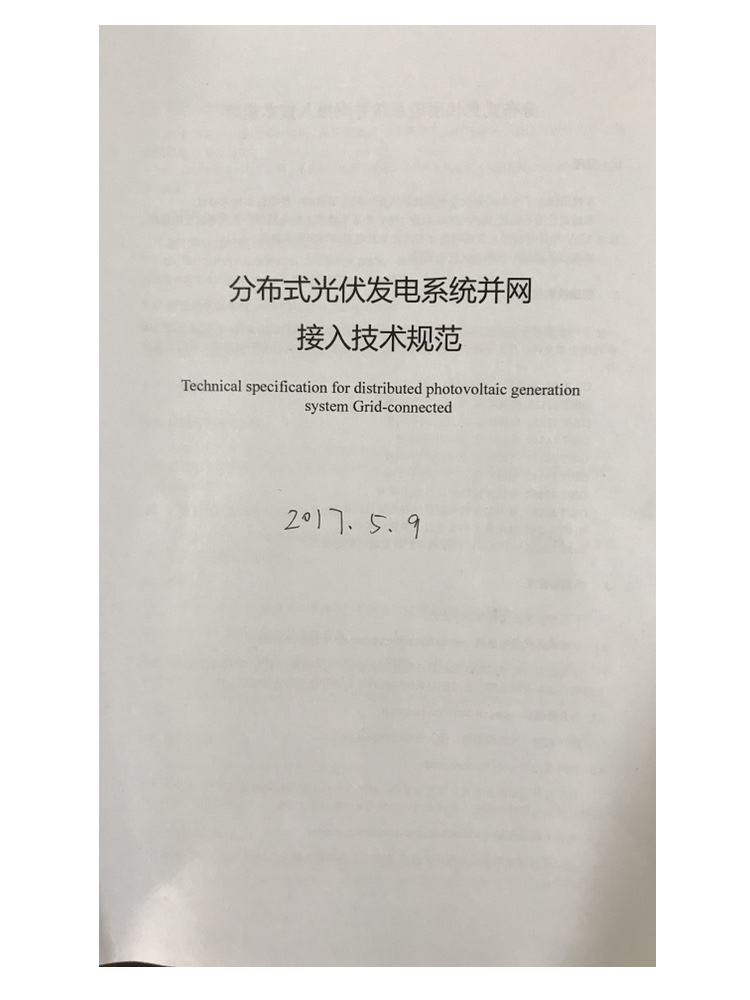

2017/5/9 21:48 下午 posted in 新闻
2017年5月9日下午，研究院在院会议室召开了四川省地方标准《分布式光伏发电系统接入技术规范》第二次标准讨论会。研究院院长姜希猛博士、崔明现博士、胡小冬，乐山职业技术学院何帆，乐山新天源太阳能电力冯加宝经理等参加了此次讨论会。
此次讨论会对上次的标准草案修改内容进行了确认，并对系统一次、接入方案部分提出了新的建议。
讨论会计划在下周五组织行业专家召开光伏接入标准研讨会。

文：乐山太阳能研究院
RSS
MWeb帮助文档